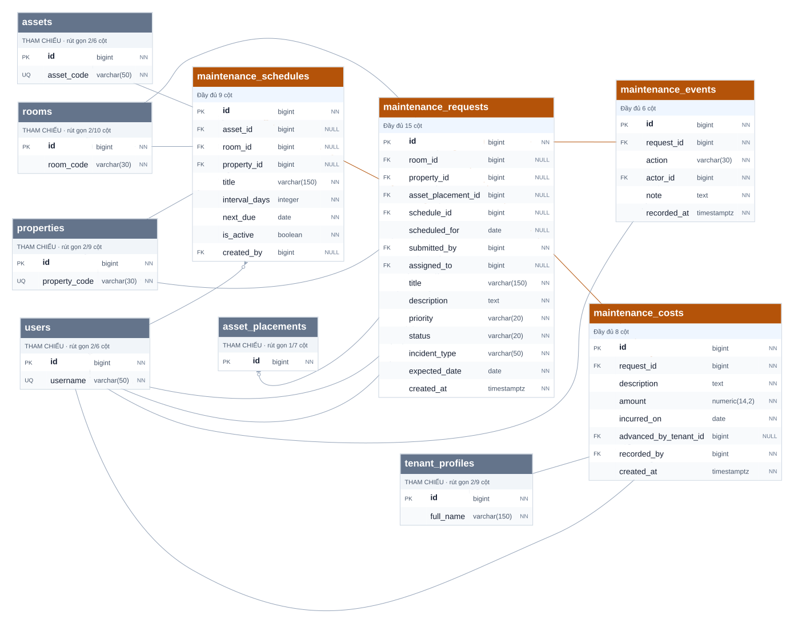

SƠ ĐỒ CSDL 06 / 08 · model49 / V13
Sự cố và bảo trì
4 bảng chính đầy đủ · 38 cột chính · 6 bảng tham chiếu rút gọn · 15 FK có nguồn trong nhóm
Bảng chính: đủ cộtBảng ngoài nhóm: rút gọn, chỉ để đọc FK

4 bảng chính đầy đủ · 38 cột chính · 6 bảng tham chiếu rút gọn · 15 FK có nguồn trong nhóm
